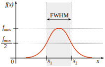

Arquitectura#
w0sa está escrito en python. Este módulo comprende principalmente de 4 clases:
W0SAShell(cmd.Cmd)WSSimulatorOSAmulatorCalibration
W0SAShell(cmd.Cmd) simula la CLI de un WSS finisar flexigrid. Acá, se definen los comandos permitidos, y los métodos se encargan de parsear los argumentos de entrada y pasarlos como argumentos a los métodos de las demás clases. WSSimulator posee estructuras de datos y métodos para simular el funcionamiento de un WSS. Sus métodos modifican las estructuras de datos y por ende el estado del simulador. OSAmulator configura la visualización y muestra el espectro en la salida del WSS. Calibration es la clase encargada de realizar los ajustes necesarios sobre el espectro del WSS para obtener resultados similares a una respuesta real.
La resolución del simulador del WSS es 6.25 GHz (la mitad del ancho de banda de cada slot). De este modo, cada slot está representado por tres frecuencias correspondientes a la frecuencia central del slot y las dos frecuencias bordes (frecuencia central +- 6.25 GHz). Por lo tanto, la atenuación definida por URA para un determinado canal se aplica a las tres frecuencias de cada slot que conforman el canal.
Un OSA se compone principalmente de un monocromador y un fotodetector. El monocromador actúa como un filtro óptico sintonizable que selecciona un rango estrecho de longitudes de onda alrededor de una longitud de onda central. Por su parte, el fotodetector mide la potencia de la luz que pasa a través de este filtro. Al modificar la longitud de onda central del filtro, es posible realizar un barrido y obtener así un espectro en un rango extendido de longitudes de onda. La respuesta espectral de dicho filtro se aproxima comúnmente a la de un filtro Gaussiano. La resolución del OSA se especifica a partir del ancho de banda efectivo del filtro a -3 dB, también conocido como Full Width at Half Maximum (FWHM) (ver Figura de abajo). Esto significa que la resolución corresponde a la diferencia entre las longitudes de onda donde la respuesta del filtro cae a la mitad de su potencia máxima.
{kind=link}
La función de transferencia Gaussiana se expresa como:
Dado que la resolución del OSA se define como el ancho de banda entre los puntos que presentan una respuesta a -3 dB (la mitad de la potencia máxima), se obtiene:
Por lo tanto, la relación entre FWHM (resolución OSA) y la desviación estándar del filtro es:
Con lo anterior, se encuentra la desviación estándar como:
Lo anterior se implementa en el método smoothing de la clase OSAmulator, el cual aplica un filtro Gaussiano 1D para emular la resolución del OSA real.
Para la calibración de potencia, se define un offset base de 5.0 dB dado por la diferencia de los espectros CWDM_r1.0_s50 (extraido de un OSA real) y w0saCWDM_r1.0_s50 (generado por w0sa utilizando la misma configuración). Cabe destacar que la entrada a w0sa es un espectro EDFA1000_r1.0_s50. Con esto se determina un factor de calibración dado por:
Important
La resolución del espectro de entrada debe coincidir con la resolución de entrada en w0sa (resolución del espectro EDFA). Esto debe ser configurado manualmente por el usuario mediante el comando SINRES.
Important
Al realizar una comparación de resultados entre w0sa y un expectro extraido desde un OSA real, las resoluciones de salida deben ser identicas en ambos casos. Es decir, sería incorrecta una comparación entre CWDM_r1.0_s50 y w0saCWDM_ri1.0_si50_ro0.5_so50 debido a que la resolución de salida del espectro real es 1.0 nm mientras la del espectro simulado es 0.5 nm. Una comparación correcta sería entre los espectros CWDM_r0.5_s50 y w0saCWDM_ri1.0_si50_ro0.5_so50. El script w0sa/data/comparator.py posee una función que facilita la comparación entre dos espectros.
- class w0sa.cli.shell.W0SAShell#
W0SAShell class is intended to simulate real WSS interaction.
- do_exit(arg)#
ES: Sale de la interfaz de línea de comandos de w0sa.
EN: Exits the w0sa CLI.
- do_clear(arg)#
ES: Limpia la pantalla del terminal.
EN: Clears the terminal screen.
- do_ls_spectrums(arg)#
ES: Lista los espectros de entrada (EDFA) disponibles.
EN: Lists the available input (EDFA) spectrums.
Example
>>> ls_spectrums
- do_ls_ports(arg)#
ES: Lista la configuración actual de puertos.
EN: Lists current ports configuration.
Example
>>> ls_ports
- do_OSA_SHOW(arg)#
ES: Muestra el espectro óptico medido por el OSA (Analizador de Espectro Óptico) simulado.
EN: Displays the optical spectrum measured by the wssulated OSA (Optical Spectrum Analyzer).
Examples
>>> OSA_SHOW >>> OSA_SHOW -wv #default >>> OSA_SHOW -fq >>> OSA_SHOW -save
- do_SINRES(arg)#
ES: Define la resolución de entrada.
EN: Sets input resolution.
Examples
>>> SINRES 1.0 #default >>> SINRES 0.03
- do_SOUTRES(arg)#
ES: Define la resolución de salida.
EN: Sets output resolution.
Examples
>>> SOUTRES 1.0 #default >>> SOUTRES 0.2
- do_SSPAN(arg)#
ES: Define el span del OSA.
EN: Sets OSA span.
Examples
>>> SSPAN 50.0 #default >>> SSPAN 35.0
- do_SETP(arg)#
ES: Define el espectro de entrada (en dBm) de un puerto del WSS.
EN: Sets the input spectrum (in dBm) of a WSS input port.
Examples
>>> SETP P2 -> EDFA1000_r1.0_s50 #default >>> SETP P9 -> EDFA1000_r0.03_s50 #Maximum port (P1-P9)
- do_DCC(arg)#
ES: Define los rangos de slots para cada canal lógico en el WSS.
EN: Defines slot ranges for each logical channel in the WSS.
Examples
>>> DCC 1=90:93; 2=94:94 >>> DCC 1=1:8;2=9:16;3=17:24;4=25:32;5=33:40;6=41:48;7=49:56;8=57:64;9=65:72;10=73:80;11=81:90;12=91:96;13=97:104;14=105:112;15=113:120;16=121:128;17=129:136;18=137:144;19=145:152;20=153:160;21=161:168;22=169:176;23=177:184;24=185:192;25=193:200;26=201:208;27=209:216;28=217:221;29=222:232;30=233:240;31=241:248;32=249:256;33=257:264;34=265:272;35=273:280;36=281:290;37=291:296;38=297:304;39=305:312;40=313:320;41=321:328;42=329:336;43=337:344;44=345:352;45=353:360;46=361:368;47=369:376;48=377:384
- do_DCCS(arg)#
ES: Muestra el estado actual de la configuración de canales.
EN: Displays the current channel configuration status.
Example
>>> DCCS
- do_URA(arg)#
ES: Asocia un puerto de entrada a un canal lógico y aplica una atenuación en dB.
EN: Assigns an input port to a logical channel and applies attenuation in dB.
Examples
>>> URA 1,1,0.0; 2,1,20.0 >>> URA 1,2,14.0;2,2,14.0;3,2,15.0;4,2,16.0;5,2,16.0;6,2,17.0;7,2,17.0;8,2,17.0;9,2,17.0;10,2,18.0;11,2,18.0;12,2,0.0;13,2,0.0;14,2,0.0;15,2,0.0;16,2,0.0;17,2,0.0;18,2,0.0;19,2,0.0;20,2,0.0;21,2,0.0;22,2,0.0;23,2,0.0;24,2,0.0;25,2,0.0;26,2,0.0;27,2,0.0;28,2,0.0;29,2,20.0;30,2,20.0;31,2,20.0;32,2,20.0;33,2,20.0;34,2,20.0;35,2,20.0;36,2,20.0;37,2,3.0;38,2,6.0;39,2,8.0;40,2,11.0;41,2,14.0;42,2,16.0;43,2,16.0;44,2,16.0;45,2,16.0;46,2,15.0;47,2,13.0;48,2,12.0
- do_RSW(arg)#
ES: Actualiza el WSS con el plan de canales reconfigurado.
EN: Updates the WSS with the reconfigured channel plan.
Example
>>> RSW
- do_URAS(arg)#
ES: Muestra el estado actual de la configuración de canales.
EN: Displays the current channel configuration status.
Example
>>> URAS
- do_DCCG(arg)#
ES: Genera un comando DCC por defecto.
EN: Generates a default DCC command.
Example
>>> DCCG
- do_URAG(arg)#
ES: Genera un comando URA desde un espectro de salida.
EN: Generates an URA command from an output spectrum.
Example
>>> URAG DWDM_r1.0_s50
- do_2dB(arg)#
ES: Convierte de mW a dB.
EN: Converts mW to dB.
Example
>>> 2dB 371.3
- do_dB2(arg)#
ES: Convierte de dB a mW.
EN: Converts dBm to mW.
Example
>>> dB2 3.0
- class w0sa.core.wss_simulator.WSSimulator#
WSSimulator class simulates a real WSS.
- prt_pwr_set(prt: int, sid: float)#
Sets an input optical spectrum to a port.
- dcc_set(ch: int, sli: int, slf: int)#
Defines a channel plan.
- ura_set(ch: int, prt: str, atn: float)#
Assgins channels to ports and defines attenuations.
- get_spectrum()#
Generates the output spectrum.
- get_dcc()#
Generates a DCC command.
- get_ura(spectrum_id: str | None = None)#
Generates an URA command.
- class w0sa.core.osa_simulator.OSAmulator(center_wavelength=1550.0, span_wavelength=50.0, sampling_points=501, output_resolution=1.0, input_resolution=1.0)#
OSAmulator manages everything related with visualization.
- spanning(center: float = 1550.0, span: int = 50.0, points: int = 501)#
Modifies OSA visualization parameters: center, span, sampling points.
- resampling(data: dict | None = None)#
Resamples data according to the sampling points.
- smoothing(data: dict | None = None)#
Performs a convolution between a 1D Gaussian kernel and the spectrum to handle OSA resolution.
- set_inres(inres: float | None = None)#
Defines input resolution. Input resolution must match the input spectrum resolution. By default input resolution is 1.0 nm.
- set_outres(outres: float | None = None)#
Defines the disired OSA output resolution. Default value is 1.0 nm.
- apply_attenuation(data: list | None = None)#
Calls the calibrator object and applies power calibration to the spectrum.
- show(data: dict | None = None, freq: bool = False, save: bool = False)#
Main method of OSAmulator. This is intended to show the resulting spectrum.
Data flow:
Get resulting spectrum from WSSimulator.
Convert frequencies to wavelengths.
Apply Gaussian filter to manage resolution.
Convert power from mW to dBm.
Apply calibration.
Resampling the data based on the sampling points.
- write(data: dict | None = None)#
Stores the output spectrum as a csv file in w0sa/data/output_spectrum directory.
- class w0sa.calibration.calibration.Calibration#
Calibration class performs the necessary calibration process to reach real output data.
- get_attenuation(in_res: float | None = None, out_res: float | None = None)#
Computes the neccesary power calibration based on input resolution (EDFA resolution) and the desired OSA output resolution.